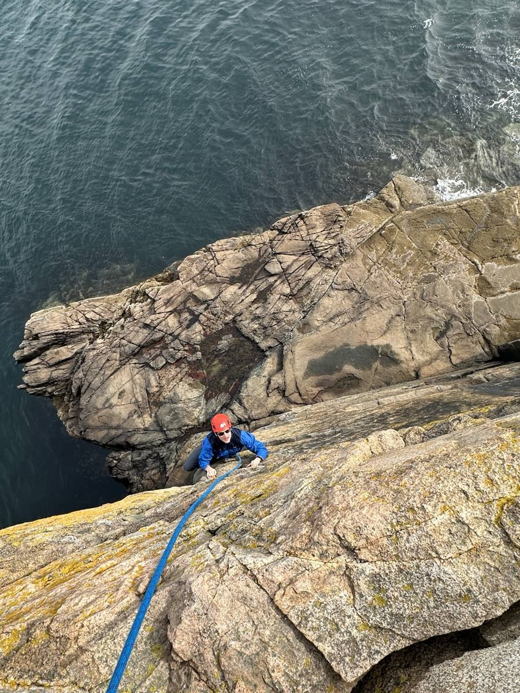

Climbing
Climbing is problem solving with your whole body.
Embedded software engineer · C/C++ · PYTHON · Machine Learning · robotics
Howdy! I'm Tyler, and I like to write code that makes machines move, see, learn. I spent five years in automotive and I'm finishing an MS in Computer Science at Georgia Tech in December 2026, where I've been focusing on AI, ML, and cyber physical systems.
The robot starts with no idea where it is. It senses landmarks within 60 cm through noisy range readings, and 300 particles narrow down its position. Click the map to move the robot and watch the filter recover. A simulation based on my localization project.

Climbing is problem solving with your whole body.
From humble beginnings in Michigan, working my way up "real" mountains in the East. It's the reason to be excited for winter.
Still learning this one. Focusing on HEMA longsword. It's a surprisingly good workout. Like boxing, but from long range.
Fascinate Tyler with a robotics problem. Open any project for the details.
Implemented extended Kalman filters and particle filters to localize and track autonomous agents from noisy sensor measurements, and built A* path planning for navigation.
Designed, wired, and built a tracked robot from scratch: an ultrasonic sensor array, H-bridge motor control, a front camera, and a magnetic collector with switch-based pickup detection, all run from a Raspberry Pi.
Looking at getting graph-based SLAM running on a real mobile robot with a 2D lidar, an IMU, and onboard cameras, and adding the sensor fusion it needs to localize reliably.
A KNN anomaly detector built into ArduPilot's inertial sensor driver and tested in its software-in-the-loop (SITL) simulator. It classifies accelerometer data in real time and alerts the ground station over MAVLink when vibration looks wrong.
Master of Science in Computer Science · GPA 3.8
Bachelor of Science in Electrical Engineering
I'm looking for embedded software and robotics roles in the New York area, and I'm always happy to talk shop with people working on robots, drones, or vehicles.